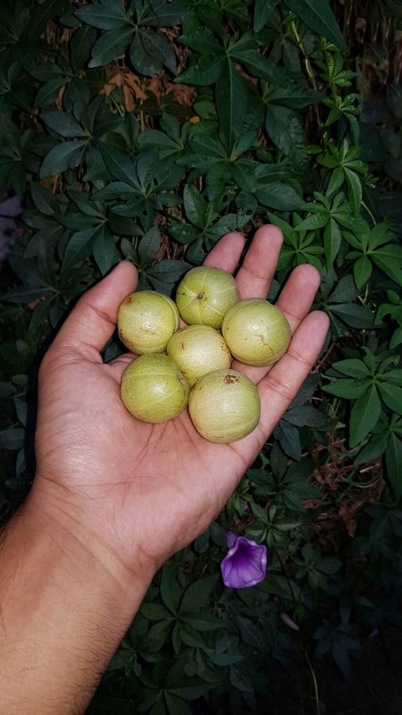

आँवलाIndian Gooseberry
Phyllanthus emblica · Phyllanthaceae · FLR-0033

- Scientific name
- Phyllanthus emblica L.
- Family
- Phyllanthaceae
- Hindi
- आँवला
- Status here
- native
- IUCN
- LC
When to look कब देखें
Present all year.
आँवला / Amla
Phyllanthus emblica L. — Phyllanthaceae
आँवला — पूर्वी उत्तर प्रदेश के ग्रामीण परिदृश्य और पारंपरिक चिकित्सा में सर्वोच्च स्थान रखने वाला एक अत्यंत गुणकारी पतझड़ी पेड़। इसकी बारीक, पंख जैसी पत्तियां वास्तव में टहनियों पर सघन रूप से लगे छोटे साधारण पत्ते होते हैं। सर्दियों में इस पेड़ पर गोल, चमकीले पीले-हरे फल आते हैं, जो स्वाद में अत्यधिक खट्टे और कसैले होते हैं और विटामिन-सी का सबसे समृद्ध प्राकृतिक स्रोत हैं। यह पेड़ कार्तिक महीने में मनाए जाने वाले 'आँवला नवमी' पर्व के सांस्कृतिक महत्व से जुड़ा है, और च्यवनप्राश जैसे आयुर्वेदिक योगों का मुख्य घटक है।
Quick Identification त्वरित पहचान
| Feature | Description |
|---|---|
| Leaves | Small, linear-oblong (10–20 mm long), arranged closely in two opposite rows along thin twigs, giving the appearance of pinnate compound leaves |
| Fruit | Globose, smooth, fleshy (1.5–3 cm diameter) and pale green to yellowish; marked with six faint vertical ribs; exceptionally sour and astringent |
| Bark | Smooth, light greenish-grey, peeling off in thin, irregular patches to reveal a cream-buff underbark |
| Flowers | Tiny, greenish-yellow (1.5–2.5 mm across), clustered in dense groups along the leaf axils of young twigs |
| Canopy | Open, feather-like, and airy; casting a light, dappled shade |
Field tip: Look for a small tree with extremely fine, feather-like foliage. Squeezing the thin twigs reveals that the tiny needle-like leaves are arranged in flat comb-like rows. The smooth, peeling greenish-grey bark and the presence of round, shiny, pale green sour fruits in winter are diagnostic.
Morphology आकारिकी
Biometrics (typical measurements in the Gangetic plain):
| Feature | Measurement |
|---|---|
| Plant height | 5–12 m |
| Leaflet length | 10–20 mm |
| Leaflet width | 2–5 mm |
| Flower diameter | 1.5–2.5 mm |
| Fruit dimensions | 1.5–3.0 cm |
Habit: A small to medium-sized deciduous tree, growing to 5–12 metres in height, with a crooked trunk and spreading branches that form a light, feathery crown.
Leaves: Simple, but arranged in two close, opposite rows on thin branchlets (10–25 cm long) in a manner that resembles a compound pinnate leaf. The leaf blades are linear-oblong, 10–20 mm long, 2–5 mm wide, light green, turning reddish-yellow before falling in spring.
Flowers: Very small, unisexual (male and female flowers are separate but occur on the same branchlet), greenish-yellow, 1.5–2.5 mm in diameter, borne in dense clusters in the leaf axils.
Fruit: A globose, fleshy, smooth drupe, 1.5–3 cm in diameter (cultivated varieties can reach up to 5 cm). The fruit is pale green or yellowish, with six vertical lines or grooves running from top to bottom. The flesh is crisp and extremely sour, containing a hard, six-angled stone enclosing 6 small seeds.
Ecological Role पारिस्थितिक भूमिका
Wildlife food. The vitamin-rich fruits are a vital food source in winter for wild mammals, including common langurs and fruit bats, as well as parakeets and crows.
Insect support. The tiny, massed yellow flowers open in spring and are highly attractive to small native bees, hoverflies, and wasps, providing an early-season nectar source.
Canopy shading. The open, feather-like foliage filters sunlight, casting a light, dappled shadow. This supports the growth of shade-tolerant herbs and grasses on the forest floor or homestead soil.
Life Cycle / Phenology जीवन चक्र
- Leaf-fall: Deciduous. Drops its leafy branchlets in early spring (March–April), making the tree bare for a brief period.
- Flowering: Fragrant yellow-green flower clusters appear alongside the fresh bright-green leaf flushes in April–May.
- Fruiting: Fruits grow slowly during the monsoon, maturing to a pale green-yellow in winter (October–February), when they are harvested.
Host Plants or Prey आहार
Associated organisms:
- Various caterpillar species feed on the fine leaflets in monsoon.
- Epiphytic lichens frequently grow on the smooth bark of older trunks.
Predators / Natural Enemies शत्रु
- Bark-Eating Caterpillars — Bore into the trunk, creating tunnels covered in frass.
- Rust Fungi — Can infect young fruits, causing dry brown patches.
- Root Rot — Can affect saplings in poorly drained, waterlogged soils.
Agricultural / Human Relevance कृषि प्रासंगिकता
Ayurvedic medicine. Amla is a keystone species in Indian traditional medicine. It is the richest natural source of Vitamin C and retains its vitamin content even after drying or cooking due to protective tannins. It is the primary ingredient in Chyawanprash (a restorative tonic) and Triphala (a classic digestive formula). It is used to boost immunity, treat coughs, and improve digestion.
Culinary uses. The sour fruits are processed in local households in Basti into a variety of popular foods:
- Pickle (Achar): Spiced and preserved in mustard oil.
- Preserve (Murabba): Boiled and steeped in sweet sugar syrup.
- Candy: Salted and sun-dried as a digestive mouth freshener (supari).
Religious and cultural significance. The tree is considered highly sacred. On Amla Navami (celebrated in the Hindu month of Kartik), families in rural UP clean the ground under an Amla tree, worship it as a symbol of Lord Vishnu or Lakshmi, and cook and consume a ritual meal beneath its shade to ensure good health and prosperity for the coming year.
Expected Locally स्थानीय रूप से अपेक्षित
Not a field record. Written from published accounts for eastern Uttar Pradesh. No confirmed local sighting yet — if you have seen it, that is what the atlas needs.
अभी तक स्थानीय पुष्टि नहीं। यह विवरण प्रकाशित स्रोतों से है, किसी अवलोकन से नहीं।
Commonly planted in home gardens and grown commercially in orchards across Basti district. The neighboring districts of Ayodhya and Pratapgarh are globally famous for Amla cultivation, and many farmers in Basti manage Amla plots. During the winter months (November–January), large baskets piled high with fresh, glossy Amla fruits are a common sight in all local vegetable markets.
Distribution वितरण
Global range: Native to tropical and subtropical South and Southeast Asia, including India, Pakistan, Nepal, Bangladesh, Sri Lanka, Myanmar, southern China, and Thailand.
In India: Found wild in dry deciduous forests across the subcontinent up to 1,500 metres in the Himalayas; cultivated extensively in agricultural plains.
In Uttar Pradesh: Common throughout the state, with massive commercial cultivation centers in the eastern and central districts.
In Basti district / eastern UP: Common in home courtyards, village borders, and commercial fruit orchards.
Range notes: No significant range changes documented.
Research Questions शोध प्रश्न
Anyone can investigate these | कोई भी इन प्रश्नों की जाँच कर सकता है
- How does the average fruit yield of a commercial Amla orchard in Basti compare to a single backyard tree? / बस्ती के एक व्यावसायिक आँवले के बगीचे के फल का औसत उत्पादन पिछवाड़े (आंगन) के एक पेड़ की तुलना में कैसा होता है? — Interview orchard owners and home growers.
- What insect species are the most active pollinators of the flowers during the peak morning hours? / सुबह के समय फूलों के सबसे सक्रिय परागणकर्ता कौन से कीट हैं? — Record insect visits from 7 AM to 10 AM.
- Does the timing of leaf fall in spring vary between young saplings and mature trees? — Document leaf-drop weeks for different tree sizes.
- How does the pH of the soil change directly under the canopy of an Amla tree due to leaf litter? — Test soil acidity under the tree vs. 10 metres away.
- How many local families in your village still perform the traditional cooking ritual under the Amla tree on Amla Navami? / आपके गाँव में कितने परिवार अभी भी आँवला नवमी पर आँवले के पेड़ के नीचे पारंपरिक भोजन पकाने की रस्म निभाते हैं? — Conduct a survey in the village.
Similar Species मिलती-जुलती प्रजातियाँ
| Species | How to tell apart | हिंदी |
|---|---|---|
| Tamarind (Tamarindus indica) | Leaves are true compound pinnate leaves with rounded leaflets; bark is dark brown, rough, and cracked; fruit is a brown pod | इमली — खुरदरी छाल, इमली की फली |
| Star Gooseberry (Phyllanthus acidus) | Leaves are larger, ovate, and arranged along branches; fruits are star-shaped, pale yellow, growing in hanging clusters along the trunk | हरफ़रौरी — बड़े पत्ते, तारे जैसे फल |
| Neem (Azadirachta indica) | Leaflets are much larger, saw-toothed, asymmetric-base; bark is dark and deeply fissured | नीम — कड़वा स्वाद, आरी-नुमा पत्ते |
Field rule: Feather-like rows of tiny, needle-like green leaflets, smooth peeling greenish-grey bark, and round pale-green sour fruits marked with six vertical lines identify Phyllanthus emblica.
Taxonomy & Classification वर्गीकरण
Original description. Carl Linnaeus described the species as Phyllanthus emblica in 1753 in his work Species Plantarum (Vol. 2, p. 982). The type locality is India. The genus name Phyllanthus is derived from the Greek phyllon (leaf) and anthos (flower), referring to the flowers which appear on leaf-like branchlets. The specific epithet emblica is the latinized version of the local Sanskrit name.
Subspecies. Monotypic — no subspecies are currently recognised.
Family and order placement. Placed in the order Malpighiales, family Phyllanthaceae. It was historically classified under Euphorbiaceae, but recent molecular studies separated it into Phyllanthaceae, characterized by two ovules per locule in the ovary.
Phylogenetic notes. Phyllanthus is a massive, diverse genus. Phyllanthus emblica represents a woody, tree-like lineage adapted to dry deciduous forest types of Asia.
IUCN status rationale. Listed as Least Concern (LC). The species has an extremely large geographic distribution, is highly abundant, and is extensively cultivated across South Asia, facing no immediate threats of extinction.
Photo Gallery फोटो गैलरी
References संदर्भ
- Linnaeus, C. (1753). Species Plantarum. Vol. 2. Laurentii Salvii, Holmiae, p. 982.
- Brandis, D. (1906). Indian Trees. Archibald Constable & Co., London.
- Scartezzini, P. & Speroni, E. (2000). Comparison of some G.I. tract activities of Phyllanthus emblica L. Journal of Ethnopharmacology, 71(1–2), 79–85.
- Dassanayake, M.D. & Fosberg, F.R. (Eds.) (1981). A Revised Handbook to the Flora of Ceylon. Vol. 2. Oxford & IBH Publishing, New Delhi.
- Botanical Survey of India — Flora of Uttar Pradesh.
- GBIF Occurrence Data — Phyllanthus emblica, Uttar Pradesh (2010–2025).
Source file: species/flora/trees/amla.md